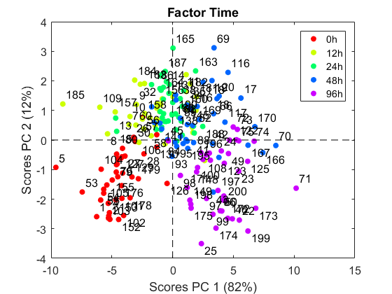
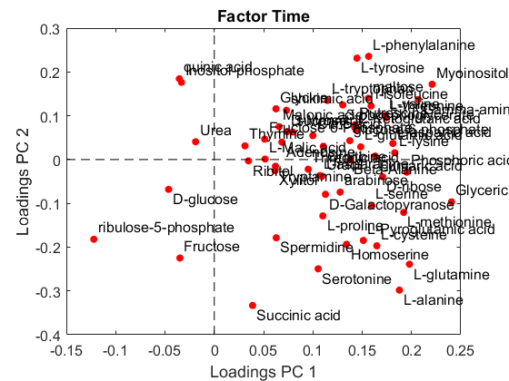
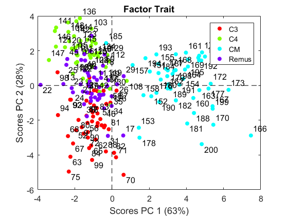
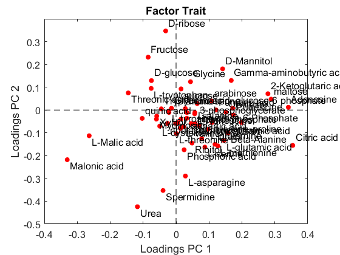
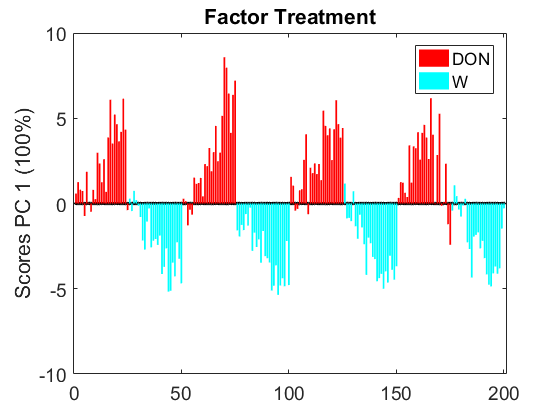
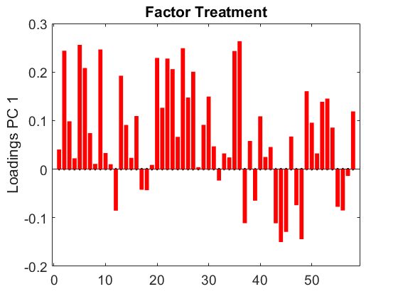

ASCA Example in Variable-Selection ANOVA Simultaneous Component Analysis. Bioinformatics. 2022
Camacho J, Vitale R, Morales-Jimenez D. and Gómez-Llorente C.
ASCA example with the data collected in Warth, B. et al. (2014). Metabolomics, 11(3), 722–738. Data were downloaded from the MetaboLights metabolomics public data repository (www.ebi.ac.uk/\-metabolights, with accession number MTBLS112). Experiments aimed at identifying changes in the metabolome of wheat (Triticum aestivum) induced by deoxynivalenol (DON), a mycotxin produced by the infestant Fusarium graminearum and related species causing the devastating plant disease Fusarium head blight. In the study, four wheat genotypes with known varying resistance to Fusarium were treated with either DON or water control and harvested after 0, 12, 24, 48 and 96 hours after treatment. Target GC-MS profiling was used to quantify an array of 57 metabolites. The resulting data matrix X has dimensions 296 x 57.
coded by: Jose Camacho Paez (josecamacho@ugr.es) last modification: 23/Sep/2022
Copyright (C) 2022 University of Granada, Granada Copyright (C) 2022 Jose Camacho Paez
This program is free software: you can redistribute it and/or modify it under the terms of the GNU General Public License as published by the Free Software Foundation, either version 3 of the License, or (at your option) any later version.
This program is distributed in the hope that it will be useful, but WITHOUT ANY WARRANTY; without even the implied warranty of MERCHANTABILITY or FITNESS FOR A PARTICULAR PURPOSE. See the GNU General Public License for more details.
You should have received a copy of the GNU General Public License along with this program. If not, see http://www.gnu.org/licenses/.
Contents
Load and prepare indices
load wheat utime = unique(time); for i=1:length(time) for j=1:length(utime) if strcmp(time{i},utime(j)) ytim(i)=j; end end end utrait = unique(trait); for i=1:length(trait) for j=1:length(utrait) if strcmp(trait{i},utrait(j)) ytra(i)=j; end end end utreat = unique(treatment); for i=1:length(treatment) for j=1:length(utreat) if strcmp(treatment{i},utreat(j)) ytre(i)=j; end end end F=[ytim' ytra' ytre'];
ASCA model: factorization and permutation testing
[table, paranovao] = parglm(X, F); ascao = asca(paranovao); table
table =
Source SumSq PercSumSq df MeanSq F Pvalue
___________ ______ _________ ___ ______ ______ ________
'Mean' 61649 84.23 1 61649 NaN NaN
'Factor 1' 2013.4 2.7508 4 503.34 13.87 0.000999
'Factor 2' 1366.8 1.8674 3 455.59 12.554 0.000999
'Factor 3' 1230.4 1.6811 1 1230.4 33.904 0.000999
'Residuals' 6931.5 9.4704 191 36.291 NaN NaN
'Total' 73191 100 200 365.96 NaN NaN
Visualization
% Factor time: 2 PCs i = 1; ascao.factors{i}.lvs=1:2; scores(ascao.factors{i},[],[],'Factor Time',[],ascao.design(:,i)); legend(utime) saveas(gcf,'Fig/scoresTime'); saveas(gcf,'Fig/scoresTime.eps','epsc'); loadings(ascao.factors{i},[],'Factor Time',var_l); saveas(gcf,'Fig/loadsTime'); saveas(gcf,'Fig/loadsTime.eps','epsc'); % Factor Trait: 2 PCs i = 2; ascao.factors{i}.lvs=1:2; scores(ascao.factors{i},[],[],'Factor Trait',[],ascao.design(:,i)); legend(utrait) saveas(gcf,'Fig/scoresTrait'); saveas(gcf,'Fig/scoresTrait.eps','epsc'); loadings(ascao.factors{i},[],'Factor Trait',var_l); saveas(gcf,'Fig/loadsTrait'); saveas(gcf,'Fig/loadsTrait.eps','epsc'); % Factor Treatment i = 3; scores(ascao.factors{i},[],[],'Factor Treatment',[],ascao.design(:,i)); legend(utreat) saveas(gcf,'Fig/scoresTreat'); saveas(gcf,'Fig/scoresTreat.eps','epsc'); loadings(ascao.factors{i},[],'Factor Treatment',var_l); saveas(gcf,'Fig/loadsTreat'); saveas(gcf,'Fig/loadsTreat.eps','epsc');     